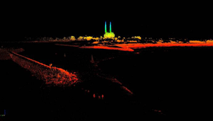

MARINE LASER SCANNER For additional information, contact Dr. Rikk Kvitek at rikk_kvitek@csumb.edu
Click on the link below to view our new 3D fly-through of San Francisco's Golden Gate
The high-resolution data set seen above was collected using SFML's new vessel-mounted mobile marine LIDAR system. Working with our industry partners, Riegl and Applanix, we have implemented an easily and rapidly deployable laser scanner capable of achieving decimeter accuracy with sub-meter resolution at a 1 kilometer range. This system gives SFML the ability to map the intertidal shoreline, offshore rocks and pinnacles and coastal features in unprecedented detail without the need for more costly airborne LIDAR surveys. The high spatial precision and accuracy of the system enable SFML to reliably monitor and quantify coastal erosion and landslide rates, bridge deformation, railway subsidence and coastal highway slippage through repetitive shoreline mapping surveys; information critical to coastal communities as they plan for climate change and sea level rise.
Elkhorn Slough, California fly-through
Los Padres Reservoir, California fly-through
SFML's new mobile marine mapping system, developed as part of the Ocean Protection Council and State Conservancy's California Seafloor Mapping Project, is now one of only three in the US and the only one of its kind on the west coast. The goal has been a cost effective approach for creating near seamless, merged bathy-topo digital elevation models of the California state lands and waters (F1 below) to facilitate legal shoreline delineation, coastal change detection, MPA design and monitoring, geohazard identification and habitat classification. The system is now fully operational and capable of being deployed anywhere along the west coast within 24 hours.
F1. Combined bathy/topo DEM of the Golden Gate built by merging SFML's laser scanner (gray) and multibeam sonar (colored by depth) data. [Larger view]

F2. Laser scan DEM of Moss Landing harbor mouth at minus tide showing riprap jetties, exposed pilings that are normally submerged and a navigational hazard for vessels, coastal structures and the local power plant facility. The entire data set was collected in a single pass along the shore with the vessel-mounted LIDAR system. [Larger view]
F3. SFML graduate / hydrographer Katie Glitz with graduate students Jere Brantner and Steve Quan next to the new Riegl side-looking LIDAR sensor mounted atop SFML's hydrographic survey launch, R/V VenTresca.


{kind=link}
![[Larger view]](Marine_Laser_Scanner/images/image007.jpg){kind=link}